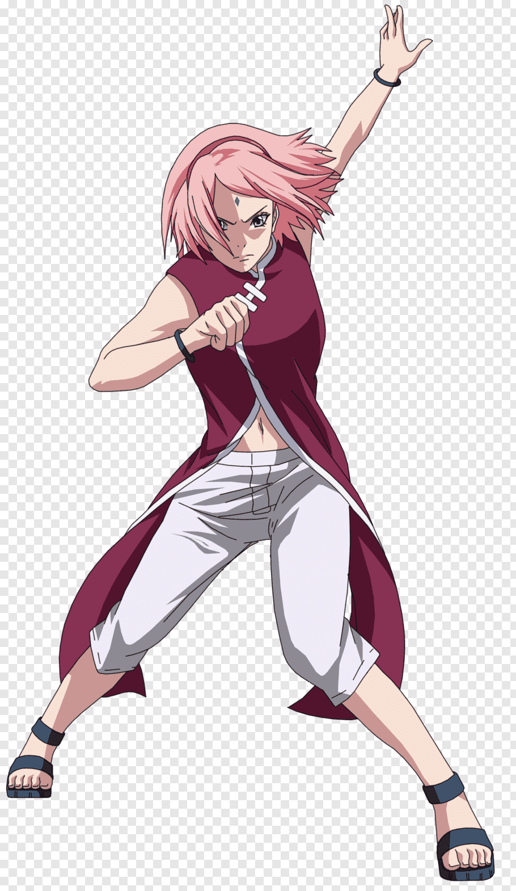
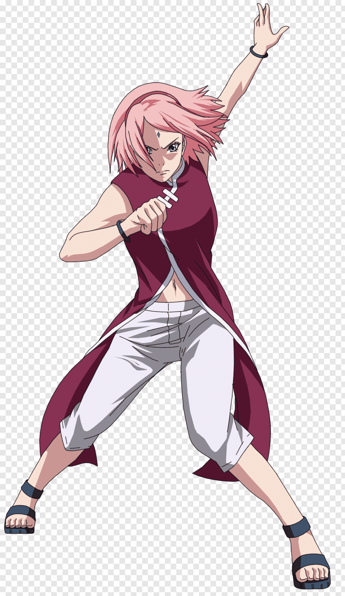

O seriálu
Naruto je japonský anime seriál, který sleduje příběh mladého ninji jménem Naruto Uzumaki, který sní o tom stát se největším a nejsilnějším ninjou – Hokagem. Příběh je plný akčních scén, přátelství, obětí a osobního růstu. Naruto, který je nositelem devítiocasého lišáka Kuramy, se musí vypořádat nejen se svými vnitřními démony, ale i s nebezpečnými nepřáteli a problémy z minulosti, které ovlivňují jeho život.
Hlavní postavy
- Naruto Uzumaki – Hlavní hrdina, který touží stát se Hokagem a ochránit svou vesnici.
- Sasuke Uchiha – Narutoův rival a přítel, který se vydává na temnou cestu pomsty.
- Sakura Haruno – Silná a inteligentní ninja, která je součástí Narutoovy týmu.
- Kakashi Hatake – Týmový vůdce, který je jedním z nejsilnějších ninjů a Narutoův mentor.
Nejvýznamnější techniky
- Rasengan – Narutoova signature technika, kterou vytvořil jeho mentor, Jiraiya.
- Chidori – Silná elektrická technika, kterou používá Sasuke Uchiha.
- Sharingan – Genetická schopnost, která umožňuje Uchihům kopírovat techniky a číst pohyby.
- Summoning Jutsu – Technika, která umožňuje summonování zvířat pro pomoc v boji.
Galerie Postav
 
